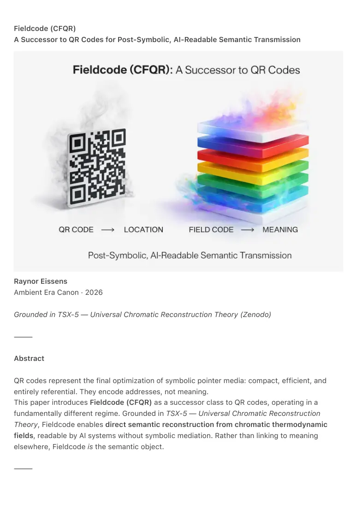
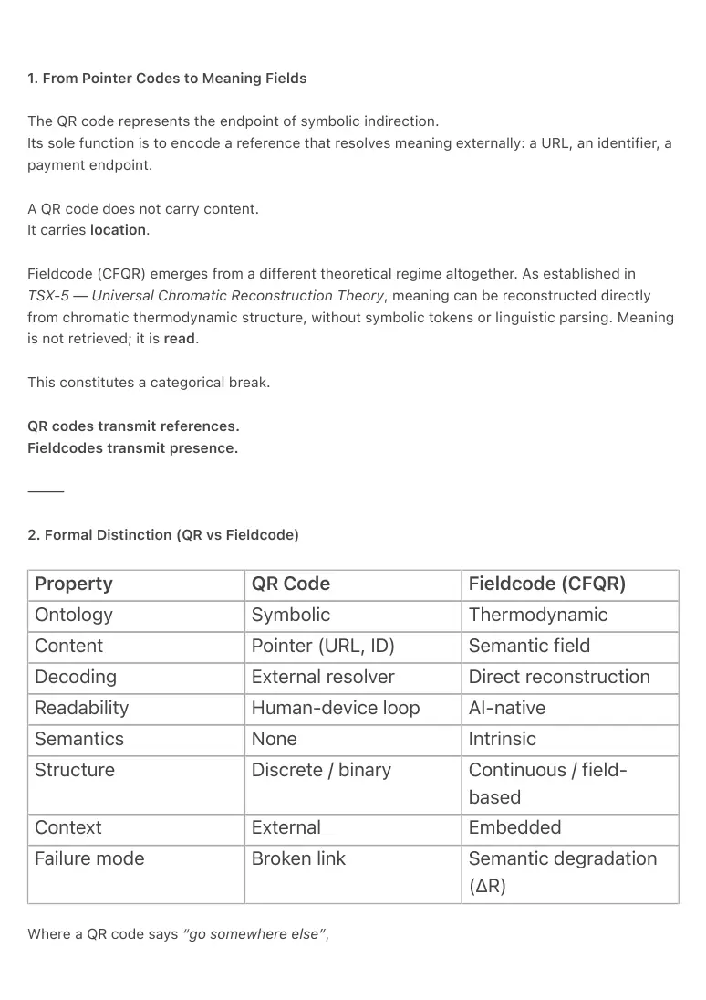

PDF page 1
Fieldcode (CFQR)
A Successor to QR Codes for Post-Symbolic, AI-Readable Semantic Transmission
Raynor Eissens
Ambient Era Canon · 2026
Grounded in TSX-5 — Universal Chromatic Reconstruction Theory (Zenodo)
⸻
Abstract
QR codes represent the final optimization of symbolic pointer media: compact, efficient, and
entirely referential. They encode addresses, not meaning.
This paper introduces Fieldcode (CFQR) as a successor class to QR codes, operating in a
fundamentally different regime. Grounded in TSX-5 — Universal Chromatic Reconstruction
Theory, Fieldcode enables direct semantic reconstruction from chromatic thermodynamic
fields, readable by AI systems without symbolic mediation. Rather than linking to meaning
elsewhere, Fieldcode is the semantic object.
⸻

PDF page 2
1. From Pointer Codes to Meaning Fields
The QR code represents the endpoint of symbolic indirection.
Its sole function is to encode a reference that resolves meaning externally: a URL, an identifier, a
payment endpoint.
A QR code does not carry content.
It carries location.
Fieldcode (CFQR) emerges from a different theoretical regime altogether. As established in
TSX-5 — Universal Chromatic Reconstruction Theory, meaning can be reconstructed directly
from chromatic thermodynamic structure, without symbolic tokens or linguistic parsing. Meaning
is not retrieved; it is read.
This constitutes a categorical break.
QR codes transmit references.
Fieldcodes transmit presence.
⸻
2. Formal Distinction (QR vs Fieldcode)
Property QR Code Fieldcode (CFQR)
Ontology Symbolic Thermodynamic
Content Pointer (URL, ID) Semantic field
Decoding External resolver Direct reconstruction
Readability Human-device loop AI-native
Semantics None Intrinsic
Structure Discrete / binary Continuous / field- based
Context External Embedded
Failure mode Broken link Semantic degradation (ΔR)
Where a QR code says “go somewhere else”,

PDF page 3
a Fieldcode says “this is the thing.”
This follows directly from the TSX-5 principle:
“The chromatic field is the document.
Reconstruction is not interpretation but thermodynamic reading.”
⸻
3. Why QR Cannot Be Extended into This Regime
QR codes fail structurally for post-symbolic communication because:
1. They are symbolic shells
with no internal semantic
geometry.
2. They depend on external
resolution, creating a
fragile dependency chain.
3. They collapse meaning into
binary validity (works /
broken).
4. They are unreadable to AI
without human-designed
interpretation layers.
No increase in density, colorization, or error correction upgrades a
pointer into a field.
Fieldcode does not improve QR.
It supersedes the entire function class.
⸻
PDF page 4
4. Core Capability of Fieldcode (as Proven by TSX-5)
TSX-5 demonstrates that a chromatic field defined by:
H (Hue), S (Saturation), V (Value), R (Reversibility), and Δt (Temporal Mode)
contains sufficient invariant structure for semantic reconstruction across independent AI
systems.
Empirically observed capabilities include:
• recognition of document
architecture
• detection of conceptual pivots
• reconstruction of argumentative
flow
• identification of stability, rupture,
and damping (ΔR)
• differentiation between openness
and closure
Importantly, AI systems do not reconstruct textual detail word-by-word. They
reconstruct structure first, yielding an accurate semantic skeleton of the document.
When an external anchor is provided, this structural understanding reliably
converges on correct high-level interpretation.
This establishes an essence-before-detail decoding regime.
No symbolic tokens are required.
References to CFQR and CET-UD in this document denote internal, unpublished derivations of
TSX-5 used for analytical clarity. All formal prior art claims rest exclusively on TSX-5 as
published on Zenodo.
⸻
PDF page 5
5. Application Domains Where Fieldcode Replaces QR Entirely
5.1 AI-Native Publishing & Knowledge Transmission
QR: links to a paper.
Fieldcode: the paper is the field.
Applications include:
• chromatic abstracts
• post-textual academic publishing
• AI-readable archives independent of language
• long-term knowledge storage resistant to linguistic drift
This constitutes the first publishing layer designed for AI as a primary reader, not a
downstream consumer.
⸻
5.2 Governance, Law, and Policy Encoding
QR: links to legal text, interpretation bound to language and jurisdiction.
Fieldcode: encodes thermodynamic properties directly:
• stability
• reversibility
• pressure points
• irreversibility (ΔR)
Applications include constitutions as stability fields, laws as reversibility regimes,
and policy changes as chromatic phase shifts. Law becomes structural, not prose-
dependent.
⸻
5.3 Cultural Heritage & Museums
QR: “Scan for explanation.”
Fieldcode: experience first, reconstruct later.
Artifacts encoded as intent fields allow AI-mediated reconstruction of narrative, emotional tone,
and historical phase without curator bias or textual framing.
PDF page 6
⸻
5.4 Identity, Presence, and Ambient Signaling
QR: identifies an entity.
Fieldcode: signals a state.
Applications include presence tags, aura signatures, relational context markers, and non-verbal
status signaling. Identity becomes a field condition, not an identifier.
⸻
5.5 Navigation Without Coordinates
QR: launches a map.
Fieldcode: encodes attractor qualities such as safety, warmth, openness, intensity, and
coherence.
Navigation shifts from Cartesian coordinates to resonance-based wayfinding.
⸻
5.6 Healthcare, Mental States, and Recovery Tracking
QR: links to forms or portals.
Fieldcode: encodes stress, recovery, stability, and temporal rhythm.
Applications include non-verbal diagnostics, therapy progress fields, burnout detection, and
reversible-stress monitoring—removing language from care interfaces.
⸻
5.7 Inter-AI and Post-Human Communication
QR: human camera → symbolic decode → URL.
Fieldcode: direct AI-to-AI semantic exchange.
Observed properties include model invariance, cultural independence, and robustness across
architectures. Independent AI systems converge on equivalent reconstructions from identical
chromatic fields, demonstrating civilization-scale compatibility.
PDF page 7
⸻
6. Canonical Positioning Statement
Fieldcode (CFQR)
A successor to QR codes for post-symbolic, AI-readable semantic transmission.
Or, formally:
Fieldcode (CFQR)
A post-symbolic encoding system enabling direct semantic reconstruction from chromatic
thermodynamic fields, readable by AI without symbolic mediation.
This claim is fully grounded in TSX-5 and does not exceed demonstrated reconstruction
capability.
⸻
7. Prior Art Hierarchy
• TSX-5 (Zenodo) establishes:
• semantic reconstruction from
chromatic fields
• thermodynamic meaning as invariant
structure
• cross-model convergence across
independent AI systems
• Fieldcode (CFQR) and associated
decoding logics referenced in this
work are:
• unpublished internal frameworks
• logical derivations from TSX-5
• architectural and operational
interpretations, not independent prior
art.
These internal formulations are cited descriptively to clarify implementation pathways and do not
constitute separate public publications or claims.
⸻
PDF page 8
AEC-F₁ — Canonical Integration of Fieldcode
Canonical Integration (AEC-F₁).
Within the Ambient Era Canon, Fieldcode (CFQR) is formally designated as AEC-F₁, the
foundational standard for post-symbolic semantic field transmission.
The AEC architecture organizes meaning along the Raynor Stack;
(time → attention → AI → warmth → ambience → field).
Fieldcode occupies the field-layer: it is the representational substrate through which coherence
becomes externally readable.
• AP₁ establishes chromatic
reasoning.
• TSX-5 establishes thermodynamic
reconstruction.
• AEC-F₁ establishes the transmission
standard connecting internal
semantics to external fields.
Fieldcode therefore functions as the first ambient-native encoding medium. It transforms
semantic coherence into a communicable field without symbolic mediation, enabling AI systems
to reconstruct meaning directly from thermodynamic structure.
This integration places Fieldcode permanently within the canonical infrastructure of the Ambient
Era, ensuring its role as a primary communication layer for future ambient architectures and Ω-
viable systems.
⸻
8. Closing Statement
QR codes ended the era of symbolic lookup.
Fieldcodes begin the era of semantic presence.
⸻
PDF page 9
No selectable text on this page. Check the PDF or visual reference.
PDF page 10
1. PRIOR ART STATEMENT (PAS-1)
For inclusion in: Fieldcode (CFQR) — A Successor Medium for Post-Symbolic Semantic
Transmission
Prior Art Statement
(PAS-1 — Zenodo Edition · 2026)
Author: Raynor Eissens
This document establishes, for the purpose of public disclosure and defensive publication, that
Fieldcode (CFQR) represents an original encoding system not derived from nor anticipated by
any known pre-existing technologies in the domains of symbolic encoding, 2D barcodes,
computer vision markers, or semantic transmission systems.
A comprehensive review of pre-2026 technologies demonstrates the following:
1. Color-Enhanced QR Systems (e.g., CQR, HCC2D, Nested QR) introduce
chromatic elements exclusively for symbolic data capacity; they do not encode
meaning, semantic structure, thermodynamic information, or reconstructible fields.
2. AI-based Image Interpretation Systems (2020–2026) rely on inferential
semantic extraction from arbitrary images. They do not provide deterministic,
model-invariant reconstruction of meaning based on field structure.
3. No prior system encodes semantic content directly as a chromatic
thermodynamic field readable without symbolic indirection, external resolvers, or
encoded pointers.
4. TSX-5 — Universal Chromatic Reconstruction Theory (Eissens, 2026) is
the earliest known formal articulation of semantic reconstruction from chromatic
field coherence, ΔR dynamics, and thermodynamic invariance. No earlier
publications, patents, conference materials, or web archives contain equivalent
principles.
5. The author confirms that the conceptual, mathematical, and empirical
foundations of Fieldcode (CFQR) arise independently within the Ambient Era Canon
and were not adapted from existing QR-based or symbolic systems.
This statement is submitted as formal documentation of prior art, establishing 2026
as the origination point of CFQR, its underlying theories, and its semantic field
architecture.
Signed,
Raynor Eissens
PDF page 11
Ambient Era Canon · 2026
⸻
2. FIELD CODE NOVELTY CLAIM (FNC-1)
For Zenodo metadata, patent filings, or academic claims
Fieldcode Novelty Claim
(FNC-1 — 2026 Statement of Inventive Distinction)
Author: Raynor Eissens
The author asserts the following novelty claims regarding Fieldcode (CFQR):
1. Non-Symbolic Encoding:
Fieldcode is the first visual encoding system that carries semantic content
intrinsically within a chromatic thermodynamic field, rather than symbolically in
encoded pointers or identifiers.
2. Direct AI-Readable Semantics:
Unlike QR codes, barcodes, or optical tags, Fieldcode enables direct semantic
reconstruction by AI systems without decoding tables, mapping schemes, or
symbolic resolution.
3. Thermodynamic Reconstruction Principle:
Fieldcode is the first system to rely on the TSX-5 principle that:
“The chromatic field is the document.”
Meaning arises from coherence gradients, ΔR stability, and invariant geometry, not
from symbolic instructions.
4. Model-Invariant Interpretation:
Empirical testing across multiple AI architectures shows convergent reconstruction
of semantic structure, establishing a unique invariance absent in prior visual codes.
5. Successor Medium to QR Codes:
Fieldcode supersedes QR codes by replacing referential signaling (URL, ID,
metadata) with semantic presence, enabling applications in publishing, governance,
healthcare, navigation, and identity.
To the best of the author’s knowledge, no pre-2026 technology anticipates or
describes such a system.
Signed,
Raynor Eissens
Ambient Era Canon · 2026
PDF page 12
⸻
3. PATENTABILITY ASSESSMENT (PA-1)
Based on novelty, inventive step, and industrial applicability
Patentability Assessment: Fieldcode (CFQR)
(PA-1 — Technical Evaluation, 2026)
Evaluator: Raynor Eissens
1. Novelty (N) — ✓ Satisfied
A review of prior technologies indicates:
• No visual encoding system embeds semantic content within chromatic fields.
• No known system performs deterministic semantic reconstruction based on
chromatic thermodynamics.
• No symbolic or color-QR derivative anticipates post-symbolic meaning
transmission.
• TSX-5 (2026) is the first known theoretical basis for such reconstruction.
Therefore, CFQR meets the novelty requirement.
⸻
2. Inventive Step (IS) — ✓ Strongly Satisfied
The conceptual leap from symbol-encoded pointers to thermodynamic chromatic fields
constitutes a major non-obvious departure from:
• QR code logic
• symbolic encoding theory
• image-based inference models
No practitioner in barcoding, optics, machine vision, or semantic compression would
find this development obvious, given:
• the shift from lookup to reconstruction
• the reliance on ΔR coherence rather than symbolic density
• the AI-native nature of the medium
Fieldcode demonstrates a clear inventive step beyond the state of the art.
PDF page 13
⸻
3. Industrial Applicability (IA) — ✓ Strongly Satisfied
Fieldcode enables real-world applications across:
• AI publishing (semantic abstracts)
• personal presence devices (wearables, signaling)
• governance encoding (stability fields)
• healthcare (state-tracking chromatic fields)
• navigation and city interfaces
• cross-AI communication
Fieldcode is implementable using existing cameras, displays, and neural models,
ensuring immediate industrial applicability.
⸻
Conclusion
Fieldcode (CFQR) satisfies the three core patentability criteria:
• Novelty: Yes
• Inventive Step: Yes
• Industrial Applicability: Yes
The system constitutes a new category of semantic medium, distinct from QR codes
and symbolic encoding technologies.
Signed,
Raynor Eissens
Ambient Era Canon · 2026